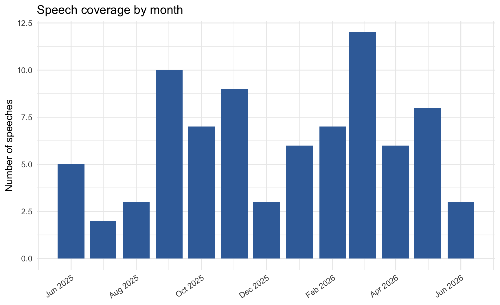
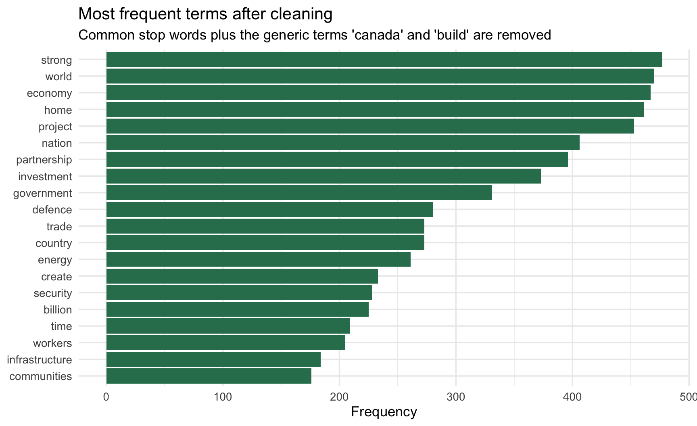
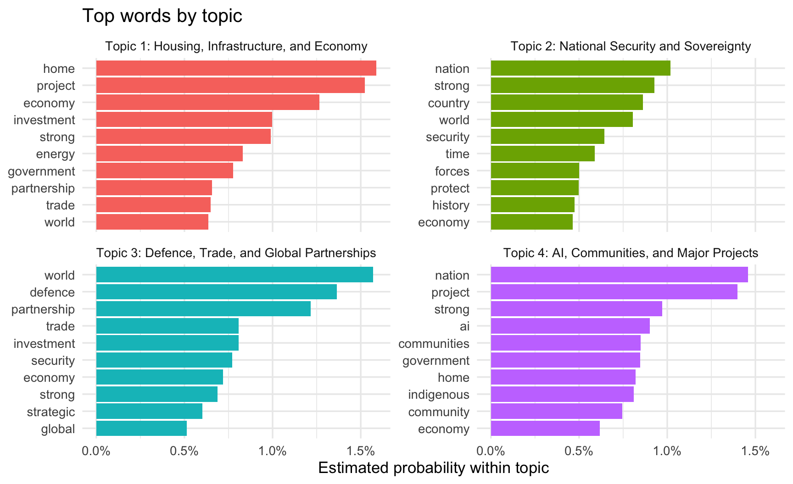
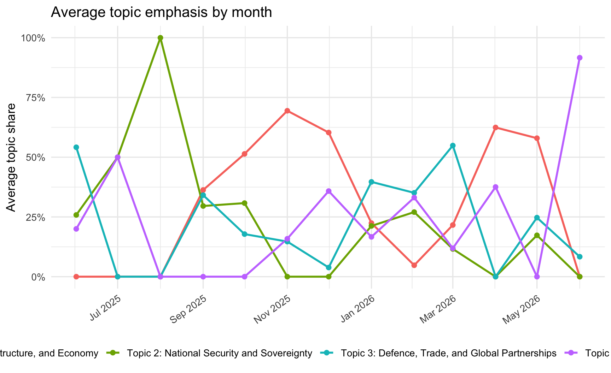

Show code
library(tidyverse)
library(tidytext)
library(topicmodels)
library(scales)
library(knitr)
theme_set(theme_minimal(base_size = 13))A text analysis of official Prime Minister of Canada speeches
library(tidyverse)
library(tidytext)
library(topicmodels)
library(scales)
library(knitr)
theme_set(theme_minimal(base_size = 13))speeches <- read_csv("Data/carney_pm_speeches_raw.csv", show_col_types = FALSE) |>
mutate(
date = as.Date(date),
doc_id = row_number(),
title = if_else(is.na(title) | title == "", "Untitled speech", title)
)
custom_stop_words <- tibble(word = c("canada", "build"))
clean_tokens <- speeches |>
select(doc_id, date, title, text) |>
unnest_tokens(word, text) |>
mutate(word = str_replace(word, "’s$|'s$", "")) |>
anti_join(stop_words, by = "word") |>
mutate(word = case_when(
word %in% c("canadian", "canadians") ~ "canada",
word %in% c("building", "built") ~ "build",
word %in% c("investments") ~ "investment",
word %in% c("partnerships", "partners") ~ "partnership",
word %in% c("projects") ~ "project",
word %in% c("stronger", "strength") ~ "strong",
word %in% c("nations", "national") ~ "nation",
word %in% c("economic") ~ "economy",
word %in% c("creating") ~ "create",
word %in% c("homes", "housing") ~ "home",
TRUE ~ word
)) |>
anti_join(custom_stop_words, by = "word")
word_counts_by_doc <- clean_tokens |>
count(doc_id, word, sort = TRUE)
speech_dtm <- word_counts_by_doc |>
cast_dtm(document = doc_id, term = word, value = n)
carney_lda <- LDA(speech_dtm, k = 4, control = list(seed = 712))
topic_terms <- tidy(carney_lda, matrix = "beta")
topic_documents <- tidy(carney_lda, matrix = "gamma") |>
mutate(document = as.integer(document)) |>
left_join(speeches |> select(doc_id, date, title), by = c("document" = "doc_id"))
top_topic_terms <- topic_terms |>
group_by(topic) |>
slice_max(beta, n = 10, with_ties = FALSE) |>
ungroup() |>
arrange(topic, desc(beta))
topic_labels <- tibble(
topic = 1:4,
topic_name = c(
"Housing, Infrastructure, and Economy",
"National Security and Sovereignty",
"Defence, Trade, and Global Partnerships",
"AI, Communities, and Major Projects"
)
)
topic_terms_named <- top_topic_terms |>
left_join(topic_labels, by = "topic") |>
mutate(topic_label = str_c("Topic ", topic, ": ", topic_name))
topic_documents_named <- topic_documents |>
left_join(topic_labels, by = "topic") |>
mutate(topic_label = str_c("Topic ", topic, ": ", topic_name))This project is a recap of Mark Carney’s first year in office through the language of his official speeches. Rather than evaluate policy outcomes directly, the goal is to identify the themes that appeared most often in his public remarks and to make those patterns visible in a reproducible way.
The guiding question is:
What core themes defined Mark Carney’s official speeches during the first year covered by this corpus?
The analysis uses speeches scraped from the official Prime Minister of Canada website and saved in Data/carney_pm_speeches_raw.csv.
corpus_summary <- speeches |>
summarise(
`Speeches analyzed` = n(),
`First speech date` = min(date),
`Last speech date` = max(date),
`Missing speech texts` = sum(is.na(text) | text == "")
)
kable(corpus_summary)| Speeches analyzed | First speech date | Last speech date | Missing speech texts |
|---|---|---|---|
| 81 | 2025-06-09 | 2026-06-04 | 0 |
speeches |>
count(month = floor_date(date, "month")) |>
ggplot(aes(month, n)) +
geom_col(fill = "#3B6EA8", width = 25) +
scale_x_date(date_labels = "%b %Y", date_breaks = "2 months") +
labs(
title = "Speech coverage by month",
x = NULL,
y = "Number of speeches"
) +
theme(axis.text.x = element_text(angle = 35, hjust = 1))
I used a lightweight text-analysis workflow in R:
investments into investment and projects into project.canada and build after normalization because they dominated every topic and made the model less informative.This is an exploratory topic model, not a definitive classification of every speech.
clean_tokens |>
count(word, sort = TRUE) |>
slice_max(n, n = 20) |>
mutate(word = reorder(word, n)) |>
ggplot(aes(n, word)) +
geom_col(fill = "#2F7D5C") +
labs(
title = "Most frequent terms after cleaning",
subtitle = "Common stop words plus the generic terms 'canada' and 'build' are removed",
x = "Frequency",
y = NULL
)
topic_table <- topic_labels |>
left_join(
top_topic_terms |>
group_by(topic) |>
summarise(`Top terms` = str_c(term, collapse = ", "), .groups = "drop"),
by = "topic"
) |>
rename(`Topic` = topic, `Suggested name` = topic_name)
kable(topic_table)| Topic | Suggested name | Top terms |
|---|---|---|
| 1 | Housing, Infrastructure, and Economy | home, project, economy, investment, strong, energy, government, partnership, trade, world |
| 2 | National Security and Sovereignty | nation, strong, country, world, security, time, forces, protect, history, economy |
| 3 | Defence, Trade, and Global Partnerships | world, defence, partnership, trade, investment, security, economy, strong, strategic, global |
| 4 | AI, Communities, and Major Projects | nation, project, strong, ai, communities, government, home, indigenous, community, economy |
topic_terms_named |>
mutate(term = reorder_within(term, beta, topic_label)) |>
ggplot(aes(beta, term, fill = topic_label)) +
geom_col(show.legend = FALSE) +
facet_wrap(~ topic_label, scales = "free_y") +
scale_y_reordered() +
scale_x_continuous(labels = percent_format(accuracy = 0.1)) +
labs(
title = "Top words by topic",
x = "Estimated probability within topic",
y = NULL
)
topic_documents_named |>
group_by(month = floor_date(date, "month"), topic_label) |>
summarise(mean_gamma = mean(gamma), .groups = "drop") |>
ggplot(aes(month, mean_gamma, color = topic_label)) +
geom_line(linewidth = 1) +
geom_point(size = 2) +
scale_x_date(date_labels = "%b %Y", date_breaks = "2 months") +
scale_y_continuous(labels = percent_format(accuracy = 1)) +
labs(
title = "Average topic emphasis by month",
x = NULL,
y = "Average topic share",
color = NULL
) +
theme(
axis.text.x = element_text(angle = 35, hjust = 1),
legend.position = "bottom"
)
Four broad themes stand out after removing generic terms that appeared across nearly all speeches:
home, project, economy, investment, and energy point to a strong focus on domestic economic development and large-scale public priorities.nation, strong, country, security, forces, and protect suggest a repeated emphasis on state capacity, protection, and sovereignty.world, defence, partnership, trade, security, strategic, and global, reflecting international positioning and alliance-building.ai, communities, indigenous, community, project, and government capture a mix of technology strategy, public investment, and community-facing commitments.A broader pattern also appears: Carney’s speeches often connect domestic prosperity with external security. Economic language and security language are not isolated; they frequently appear as part of the same governing narrative.
The public-facing report uses the saved CSV in Data/carney_pm_speeches_raw.csv, so it can be rendered without re-scraping the website.
To reproduce the report:
quarto render carney_first_year_report.qmdThe technical notebook, NLP_draft1.qmd, contains the earlier scraping and modeling proof-of-work.